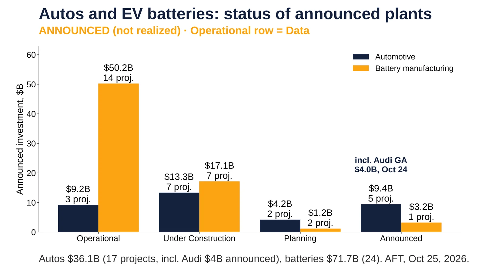
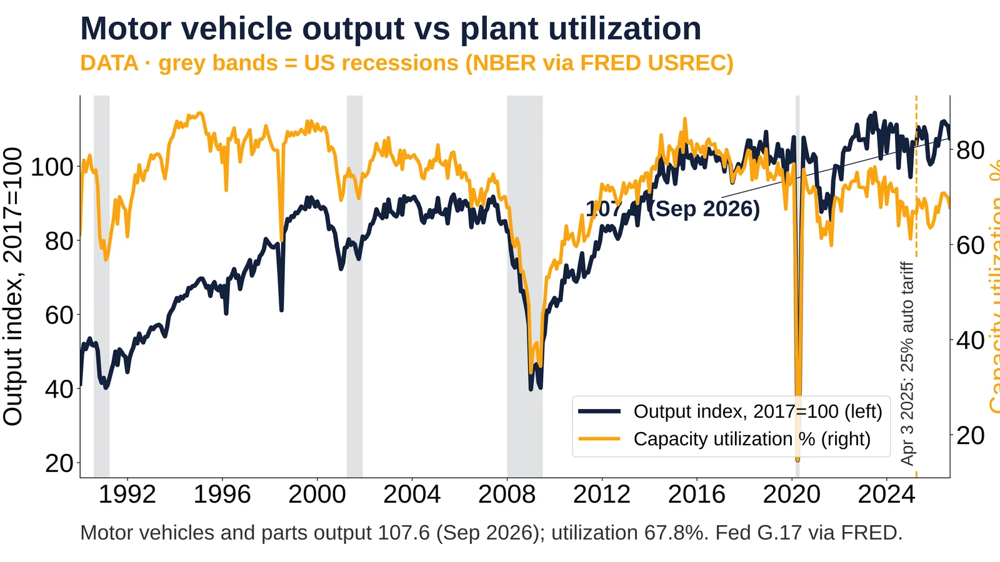
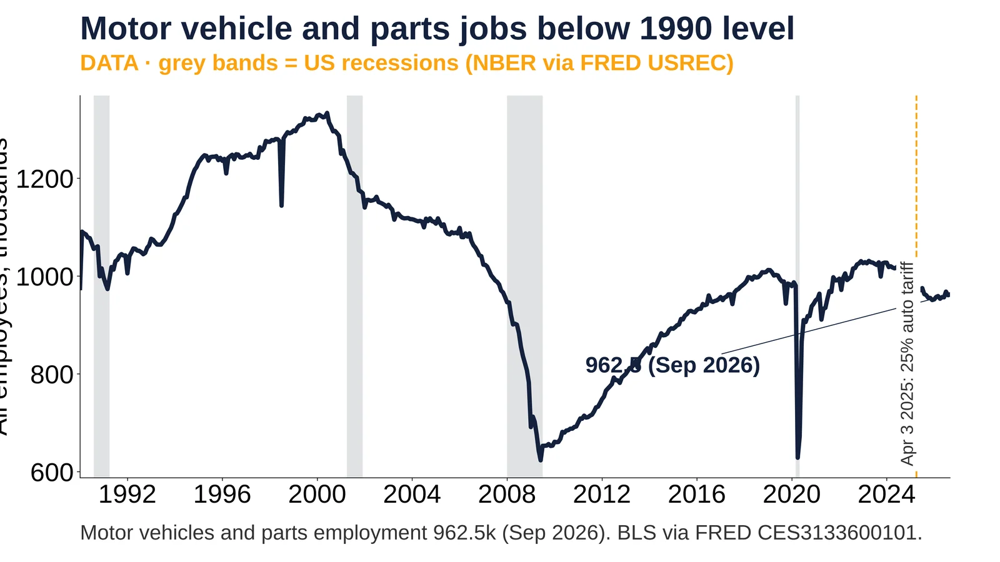

10. Autos and EVs

Autos $36.1B (17 projects, incl. Audi $4B announced), batteries $71.7B (24). AFT, Oct 25, 2026.
Announced | Data date: 2026-10-25 (AFT database update)
- Oct 21, 2026: batteries $50.2B of $71.7B already operating (Data) https://americanfactorytracker.com/forecast
- Autos: $9.2B of $36.1B operating (Oct 25, 2026) (Data) https://americanfactorytracker.com/forecast
- Ford Stanton TN $5.6B and Rivian GA $5.0B under construction (Announced) https://americanfactorytracker.com/forecast
- Apr 3, 2025: 25% auto tariff in effect https://www.whitehouse.gov/presidential-actions/2025/03/adjusting-imports-of-automobiles-and-autombile-parts-into-the-united-states/
- Oct 24, 2026: Audi GA ~$4B, 4,500 jobs, AFT status Announced; full production 2031 per Georgia (Projection) https://americanfactorytracker.com/ https://gov.georgia.gov/press-releases/2026-10-24/gov-kemp-audi-ag-selects-georgia-invest-4-billion-first-us-manufacturing https://www.audi.com/en/press-releases/audi-to-establish-first-us-production-site-in-georgia-investing-4-billion-and-creating-4500-jobs-18420 https://www.cnbc.com/2026/10/24/trump-audi-factory-georgia.html
Sources: https://americanfactorytracker.com/analytics https://americanfactorytracker.com/forecast https://gov.georgia.gov/press-releases/2026-10-24/gov-kemp-audi-ag-selects-georgia-invest-4-billion-first-us-manufacturing https://www.audi.com/en/press-releases/audi-to-establish-first-us-production-site-in-georgia-investing-4-billion-and-creating-4500-jobs-18420 https://www.cnbc.com/2026/10/24/trump-audi-factory-georgia.html

Motor vehicles and parts output 107.6 (Sep 2026); utilization 67.8%. Fed G.17 via FRED.
Data
- Apr 2020: output 20.6, utilization 14.6% (Data) https://fred.stlouisfed.org/series/IPG3361T3S
- Mar 26, 2025: 25% auto tariff proclaimed, effective Apr 3 https://www.whitehouse.gov/fact-sheets/2025/03/fact-sheet-president-donald-j-trump-adjusts-imports-of-automobiles-and-automobile-parts-into-the-united-states/
- Jul 2023: output high 114.4 (Data) https://fred.stlouisfed.org/series/IPG3361T3S
- Sep 2026: output 107.6; utilization 67.8% vs 76.9% Feb 2020 (Data) https://fred.stlouisfed.org/series/CAPUTLG3361T3S
Sources: https://fred.stlouisfed.org/series/IPG3361T3S https://fred.stlouisfed.org/series/CAPUTLG3361T3S https://fred.stlouisfed.org/series/USREC

Motor vehicles and parts employment 962.5k (Sep 2026). BLS via FRED CES3133600101.
Data
- Jun 2000: peak 1,333.6k (Data) https://fred.stlouisfed.org/series/CES3133600101
- Jun 2009: low 623.3k (Data) https://fred.stlouisfed.org/series/CES3133600101
- Apr 3, 2025: 25% auto tariff in effect https://content.govdelivery.com/accounts/USDHSCBP/bulletins/3da18a1
- Sep 2026: 962.5k vs 975.5k in Jan 2025 (Data) https://fred.stlouisfed.org/series/CES3133600101
Sources: https://fred.stlouisfed.org/series/CES3133600101 https://fred.stlouisfed.org/series/USREC